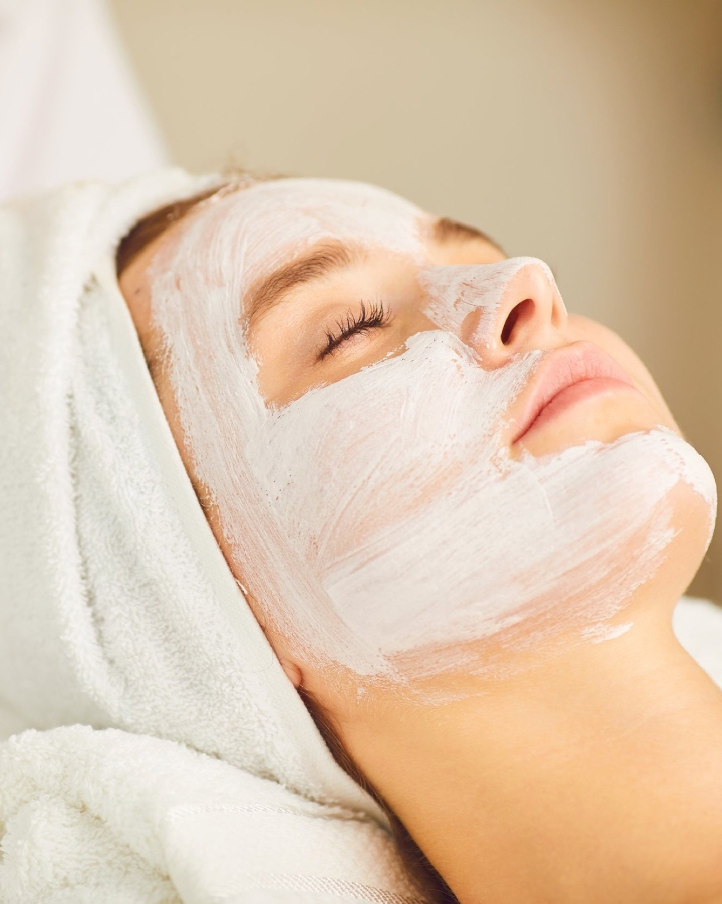
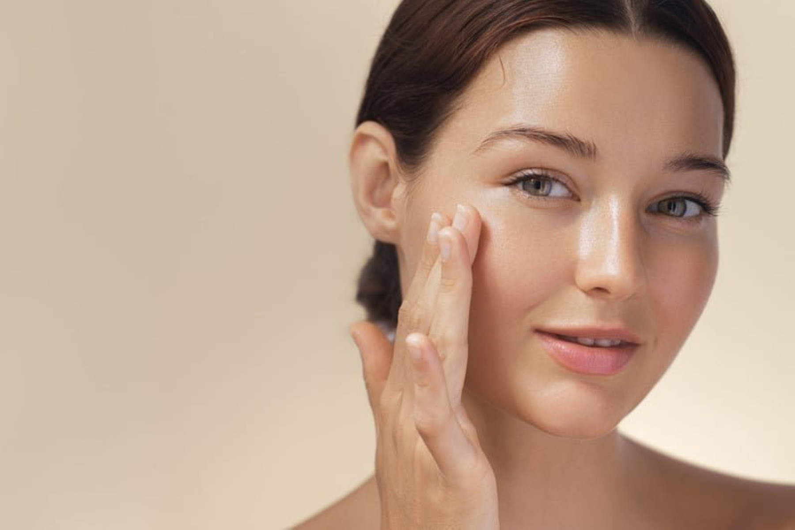
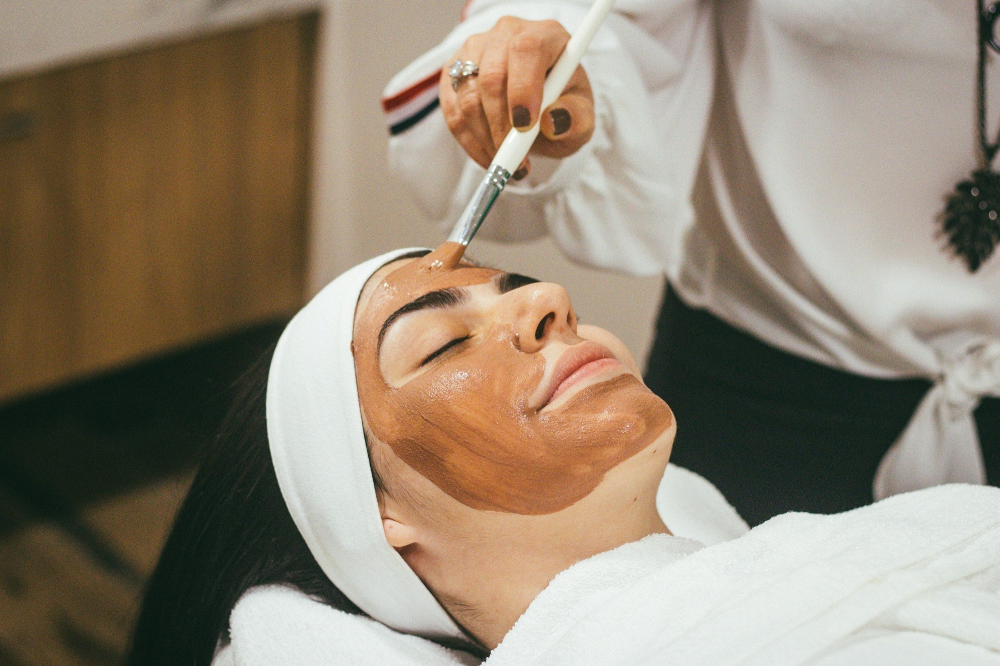
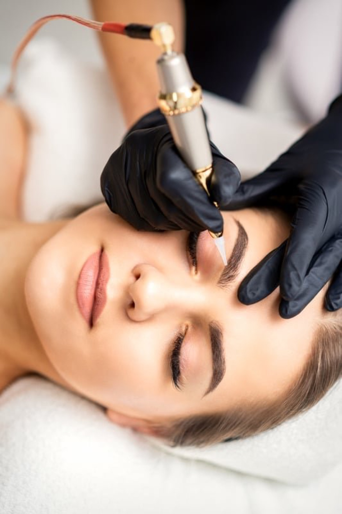
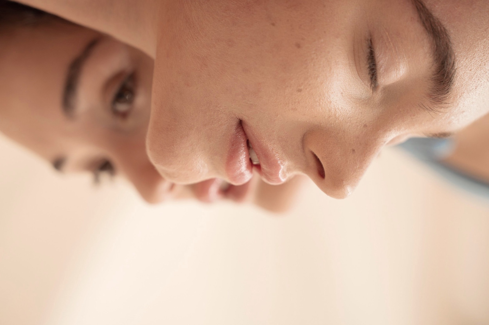
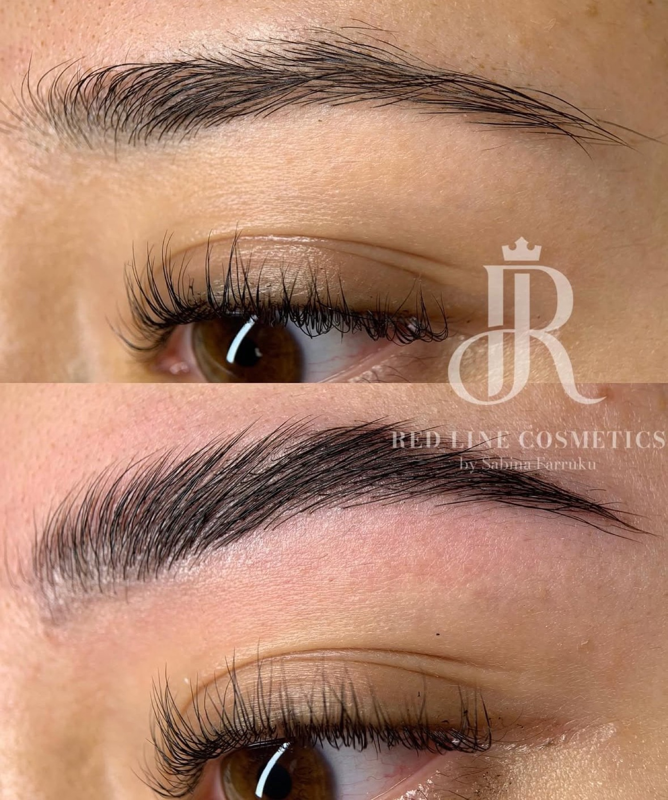
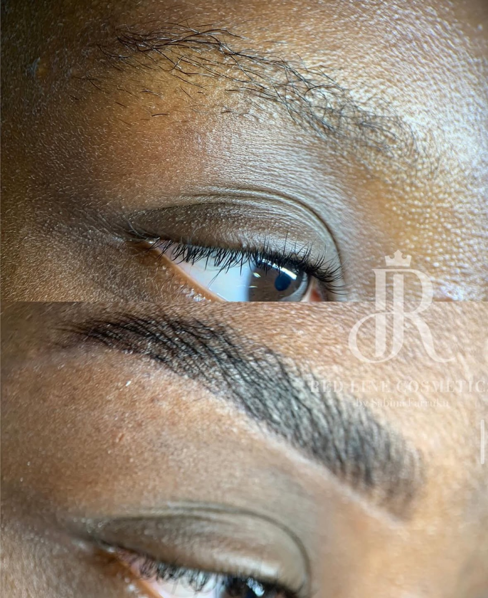

Kosmetikstudio München-Forstenried
Zeit für Ihre Haut
Sanfte Behandlungen für Gesicht, Brauen und Wimpern. Persönlich, ruhig und mit Blick fürs Detail.
Termin online buchen

Über Sabina Farruku
Entdecken Sie Ihre wahre Schönheit
„Wir bekämpfen keine Hautprobleme, wir bringen Ihre Haut zum Strahlen.“
Schönheit ist individuell, und jeder Mensch ist einzigartig. In unserem Kosmetikstudio in München möchten wir Sie dabei unterstützen, Ihre persönlichen Merkmale zu betonen und Ihre natürliche Schönheit zum Vorschein zu bringen.
Wir verstehen Schönheit als eine ganz persönliche Reise – eine, die von innen nach außen geht. Wahre Schönheit liegt auch im Selbstbewusstsein, das mit dem Gefühl einhergeht, sich in der eigenen Haut wohlzufühlen.
Sabina Farruku, Gründerin
Leistungen
Services im Überblick
Microneedling
Regenerierende Behandlung für ein ebenmäßigeres Hautbild, individuell auf Ihre Haut abgestimmt.
Wimpernlifting
Unser Lashlift verleiht Ihren Naturwimpern neuen Schwung und öffnet den Blick – ganz ohne Extensions oder Mascara.
Browlifting / Brow Lamination
Sanftes Browstyling: Ihre Augenbrauen kommen in Form, ihre natürliche Fülle wird betont.
Permanent Make-up / Microblading
Perfekt geformte Brauen, ein ausdrucksstarker Lidstrich oder harmonisch konturierte Lippen – dauerhaft frisch. Auch Korrektur oder Entfernung von altem Permanent Make-up ist möglich.
Dauerhafte Haarentfernung (Laser)
Modernste Dioden-Lasertechnologie, schonend und präzise: Beine, Achseln, Bikinizone oder Gesicht. Für Frauen und Männer.
Make-up / Visagistik
Make-up für besondere Anlässe und den Alltag, abgestimmt auf Ihre persönlichen Merkmale.
Individuelle Gesichtsbehandlungen
Auf Ihren Hauttyp abgestimmt: von intensiver Reinigung über Feuchtigkeit und Anti-Aging bis zu Fruchtsäurebehandlungen.
Fineline Tattoo
Feine, filigrane Linien und zarte Motive, präzise gestochen. Sprechen Sie uns mit Ihrer Idee an.
Ablauf
Ihr Termin in drei Schritten
Beratung
Wir besprechen Ihre Wünsche, Ihren Hauttyp und das passende Vorgehen, bevor wir beginnen.
Behandlung
In ruhiger Atmosphäre setzen wir die Behandlung sorgfältig um und nehmen uns die Zeit, die sie braucht.
Nachpflege
Sie erhalten Tipps zur Pflege danach, damit Ihr Ergebnis lange schön bleibt.
Einblicke ins Studio
Behandlungen und Ergebnisse





Schulungen & Kurse
Sie möchten Wimpern, Brauen oder Make-up selbst von Grund auf lernen? Die Red Line Academy gibt Wissen und Praxis weiter. Termine und Inhalte besprechen wir persönlich.
Schulung anfragenFAQ
Häufige Fragen
Wie bereite ich mich auf den Termin vor?
Kommen Sie am besten ungeschminkt im Bereich der Behandlung. Bei Wimpern- und Brauenbehandlungen verzichten Sie bitte auf Mascara und Augen-Make-up. Offene Fragen klären wir gern vorab telefonisch.
Wie lange dauert eine Behandlung?
Das hängt von der Behandlung ab. Bei der Buchung sehen Sie die ungefähre Dauer. Beim Beratungsgespräch besprechen wir den genauen Zeitrahmen.
Was muss ich nach der Behandlung beachten?
Nach jeder Behandlung bekommen Sie individuelle Hinweise zur Pflege. Das gilt besonders nach Permanent Make-up, Laser und Microneedling.
Was gilt, wenn ich einen Termin absagen muss?
Bitte erscheinen Sie pünktlich. Bis 48 Stunden vor dem Termin ist die Absage kostenfrei. Danach sowie bei Verspätung von mehr als 30 Minuten oder Nichterscheinen kann eine Ausfallgebühr anfallen.
Kontakt & Anfahrt
Wir freuen uns auf Sie
- Adresse
- Red Line Cosmetics
Fürstenrieder Str. 279
81377 München - Öffnungszeiten
- Montag – Samstag, 10:00 – 18:00 Uhr
- Telefon
- +49 172 9746892
- sabinafarruku@yahoo.de
- @red_line_cosmetics
Anfahrt
Die Karte öffnet sich in Google Maps. Erst mit Ihrem Klick werden Daten dorthin übertragen.
Route in Google Maps Termin online buchen